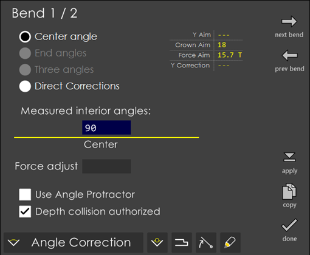

Run
Switching to the Run environment displays programs (like the display in the Edit page). A model-based program or a direct program can be selected and run from this page.
Run: Model-based program
Touch the program you want to run and then press this button. This brings up the Setup sheet of the program selected. Pressing the run button on this page does the actual run process. If the tool(s) used in the program no longer exist in the tool inventory, a warning message is displayed as shown below:
The program cannot be run until you navigate to the edit mode and change the tool.
If the program contains multiple setups, a message like the one below appears when you try to run the program. Once you select which setup you are running, only the tools related to that setup are displayed in the setup sheet, and only those bends are programmed into the machine for running.
The commands save flat, rename, delete, transfer and organize are similar to the ones in the Edit page. See the page for more details.
Use the up and down arrows present to the bottom right of the page to scroll through and view the list of programs the page contains
Direct Program
Running a direct program is like running a program that was created from a 3D model. Select the program you want to run and then press run. A small dialog as shown in the picture below comes up displaying a brief information about the program you are about to run.
Pressing the run button shown in this dialog takes you to the Run Program page. This page is similar to the page which comes up while running a model, the only difference being, in place of the 3D views of each step, a table with the step values are displayed. While running a direct program, the edit cycle and corrections buttons are highlighted whenever there is a change, and there is also a yellow dot displayed near each bend that has been corrected. See the image below - the current bend has some cycle corrections, and bends 1 and 3 have some corrections:
The actual bending cycle is similar - tap the pedal to position the gauges, press the pedal to bend.
Setup Sheet
When a program is selected for running, the setup sheet is displayed. This shows the blank and the finished part, along with their dimensions:
The setup sheet guides you through mounting the tools on the brake. Use the Next tool and Prev tool buttons to switch through all the tools (dies, die holders, punch holders, punches) to be mounted to run this program. Finally, press the Run button to switch to run the program.
Run Program
In this environment, the press-brake is being used to perform the bending. Each bend essentially consists of two phases:
-
Tap the foot pedal to move the back-gauges into position.
-
The sheet is positioned into the brake, and press and hold the foot pedal to perform the bend.
The indicators on the top left guide you through this cycle. The 3D display on the right displays how the blank should be inserted into the machine for each step. As you go through the operations, this picture changes to display the appropriate bend. Since this is a live 3D view, you can use the display button to change what is displayed, or to change the viewpoint. You can also use the zoom and pan navigation buttons along the bottom of the screen to manipulate the 3D view.
Part Count
The part quantity is displayed to the left along with the other details displayed about the program being processed. This counts as the parts are being processed. To set the current part count, or to set a maximum quantity, just tap on the part count number. This brings up an input box like the one below:
This allows you to set both the current part count and the maximum(optionally). Leave them blank, if you don’t have a pre-set maximum you want to stop at. If you do set it, and that quantity is reached, the following alert message is displayed:
Corrections
Touch the corrections button to bring up the adjustment screen using which you can tweak bend angles after making a test piece and measuring the actual angles. You can also perform gauge adjustments by pressing the corresponding button in the Corrections dialog. See the section on Corrections for more details.
Cycle Editing
Touch the Edit Cycle button to bring up the bend cycle editor.
This editor displays a time-graph of the bending process. You can set up ram positions (like the slow-down positions), ram speeds (like the bend speed, approach speed) and delays (like the bend delay and the pinch delay) and then press apply to apply the changes. The changes made here are also saved with the program and used for the next time. Sometimes on a part, you may want a value to be copied across all the bends, say for example the TDC value. To facilitate this, use copy. Pressing this button copies the selected field’s value across all the bends of the part. A warning message (like Set Slowdown=6mm on all bends?) is displayed before applying the change.
Numeric Panel
Touch the Numeric button to bring up the Numeric Panel. Current and target position of all the axes is displayed here along with bend cycle positions. Correction column can be editor for all the axes, Force and Crown.
Corrections
The sheet metals used in the workshops hardly ever has their nominal thickness. The real thickness commonly varies ±10% from the nominal value. Also, the variation is not constant across the whole length of the sheet. The thickness on the left side can be different from the thickness on the right side (sheets with a trapezoidal section). Also, after having made a bend, if the angle intended is not obtained you need to make some tweaks to ensure that the angle originally intended is achieved. To correct such types of errors from affecting the final product you provide the machine with corrections which are provided in this page. There are four types of corrections defined which as detailed below.
Angle Correction
After having made a bend, the operator measures the angle obtained. The measured angular value is entered in the Angle field. Suppose, you want an interior angle of 135°, you make a bend and obtain a wide angle which measures 138°. Now, you just enter 138° in this field. Variants of this method allow you to enter two or three measures. automatically calculates the correction to obtain the angle originally programmed. If after making the corrected bend, the angle is still not correct, simply enter the new measured angle value(s). Corrections obtained with this method sum up. Typically, the situation converges very quickly, say after one or two iterations.
Center angle:
When selected, this option provides a Center input box for entering the Measured interior angle. You simply measure the resulting angle and enter the exact value in this field, RightAngle automatically computes a correction in BDC target and applies it to both Y1 and Y2.

End angles:
Selecting this mode, allows you to enter the Left and Right angles under the Measured interior angles field. In this case, you measure the resulting angle near each extremity. As a result, ca different correction is computed in BDC target separately for Y1 and Y2, considering the bend position along the bed and its outer width. This is only possible when the bend width is 10% of the bed length. With shorter widths, slight differences in measured left and TJS90s might result in much larger difference in Y1 and Y2 corrections leading to an excessive ram tilt.
Three angles:
In this mode, you can enter the Left, Center and Right angles under the Measured interior angles field. Here, you measure the resulting angle in the middle and near each extremity, thereby computing a different correction in BDC target separately for Y1 and Y2 and a correction in target position for the crowning device. The three corrections are computed in a consistent way, considering the mutual influence of crowning on punch penetration depending on the position of the bend along the bed and its outer width. For instance, a large positive increase in crowning will lead to a surprisingly positive correction to Y1 and Y2. This method is only possible when bend width is at least 10% of bend length. Note that with shorter widths, slight differences in measured left and TJS90s might result in much larger difference in Y1 and Y2 corrections, leading to an excessive ram tilt.
Direct corrections:
When you choose this option, the Y1 correction, Y2 correction and Crowning correction fields are displayed. You simply enter a value in the required field for correction. If the correction concerns the two sides of the beam, the same value for Y1 and Y2 must be entered. You can alter the crowning correction using the same principle.
| Direct corrections do not sum up. They simply replace the existing corrections. |
Force adjust:
The value entered in this field is added to the precomputed bending force (tonnage) needed for the bend. If the resulting total force is greater than the tools limit, a warning is issued.
Depth collision authorized:
In certain bends, it is foreseen that the punch will push the material against the die’s V bottom or against its inner walls, which is named as Depth Collision. Some tools support this, while others do not. By turning on this field, you force the system to accept the collision. Bases its computation on a theoretical geometry of the tools and the material under pressure that might be slightly different from the reality. Therefore, in the actual case, the collision might be a near miss. Also, the tools might be sufficiently robust for a slight contact but not sufficiently to be qualified as robust enough for all cases. Finally, such a warning also makes it explicit that the bend will not be a so-called air-bend, as probably expected by the operator. Instead, it will be a variant of bottoming bends, which require a slightly different cycle. For these reasons, operator must be warned of a possible problem and has thus the possibility to give her permission, assuming the responsibility of any damage to tools.
Gauge Correction
In this page, you can correct the target position of each back-gauge finger, in order to correct the resulting flange length. Do not use this to select an entirely new gauging point. For each BG finger, you can correct the target along three classical directions: X, R and Z.
X: Positive or negative correction along the X direction. To set the BG fingers at a greater distance from the tools, enter a positive value.
Z: Positive or negative correction along the Z direction. To set the BG fingers further on the right, towards the Y2 cylinder, enter a positive value.
R: Positive or negative correction along the R direction. To further lift the BG fingers, enter a positive value.
Retraction: In certain situations, it is necessary to disengage the back gauge during bending. The retraction value is a relative value usually positive, implying that the gauge moves away from the die. If a negative value is programmed, this allows to execute a negative retraction, that is a displacement towards the die. Operator can modify the value automatically computed by the system. Note that the value entered in this field represents the actual distance moved, not a correction to be added to previously computed values, as for X, R and Z corrections above.
| A retraction value of 0 (default value) means "no retraction and no ram stop at pinch point". |
| A retraction value of 0.001 means "no retraction, ram will briefly stop at pinch point". |
| When some value is given for retraction it means that "ram stops at pinch point, retraction is performed, ram resumes descent". Depending on how the machine parameters have been set, ram can also resume descent before the retraction is finished. It could even immediately resume descent as soon as the retraction has just started. |
Once the corrections are entered, use the Apply button to apply the corrections to the bend. In certain cases, you might want these corrections to be applied globally on all the bends (say for example in a part with 10 bends) rather than applying the correction on each bend. To facilitate such cases, use the copy option that provides. First apply the corrections that you have done to the current bend. Then press copy to copy the corrections to the other bends. A dialog (see picture below) asking whether to copy the corrections to other bends comes up. Press any option to copy and press cancel to cancel the operation.
In the case of angle correction, the adjustments are copied only to same-angle bends (you can see the Y1 correction and Y2 corrections fields getting copied over).
Another way to apply correction to all bends is by pressing general, which will go to general mode. Correction entered, in general mode, will be applied to all the bends.